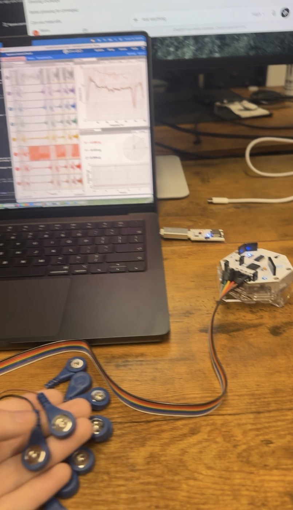
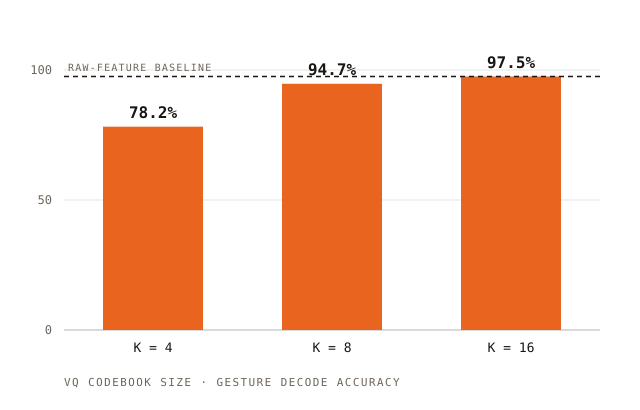

[01]
Electromyography

- EMG silent-speech research at Stanford: a wearable that reads muscle activity off the skin and decodes words said silently. Electrodes → signal → decoder, on a 16-channel OpenBCI Cyton+Daisy rig, with an MCP server so an LLM agent can operate the hardware itself and a real-time labeled-recording pipeline behind a from-scratch decoder.
Machine Learning & Data Modeling
- Built the decoder's modeling stack: EMG-specific data augmentation (channel dropout, time-warping, amplitude jitter, electrode-shift simulation) and vector-quantized tokenization (learned codebooks over the raw signal, HuBERT-style) that turns continuous EMG into discrete units a sequence model can decode.
- Held to a strict leak-free protocol with no train/test contamination, so the accuracy numbers hold up rather than being inflated by leakage.
- Current bet: noisy-channel decoding with an LLM prior. Partial EMG evidence × P(words | context) → open-vocabulary intent, not a fixed menu of gestures.
